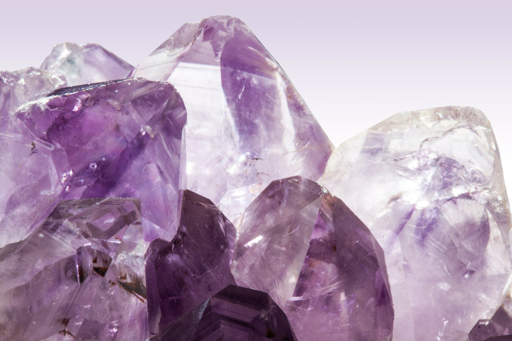
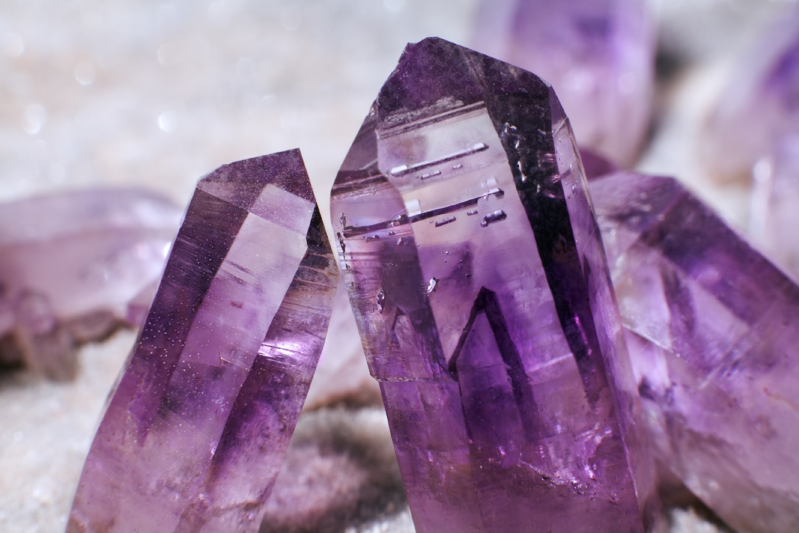

Ametista
Significado
De cor violeta, a pedra ametista simboliza a mudança de um estado de consciência normal, desperto, para um estado meditativo. Afasta a mente de padrões egocêntricos de pensamento e, por isso, é usada para aliviar tensões mentais.
É considerada a pedra da sabedoria e do equilíbrio. Ela nos ensina humildade, pois nos mostra a infinitude do que nos cerca e nos permite enxergar o quanto nossas preocupações cotidianas são pequenas.
Efeitos Terapêuticos
A Ametista aumenta nossa disposição, acalma as emoções, melhora o sono, reduz as dores de cabeça, regula os hormônios e ajuda a curar problemas de audição e respiratórios.
Ela purifica o corpo, ajuda a eliminar toxinas, desintoxica o sangue e melhora muito o metabolismo, sendo muito útil para os processos de emagrecimento.
← Voltar